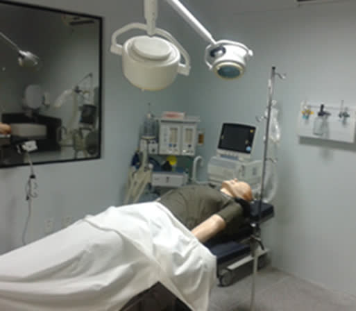
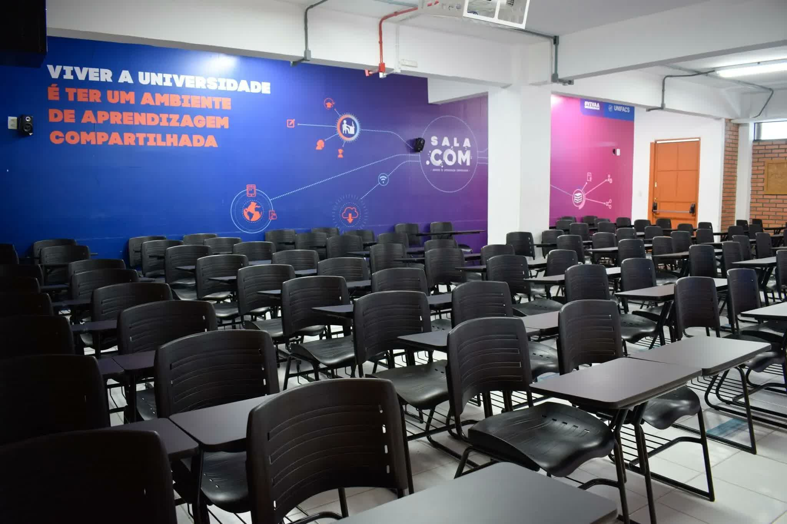
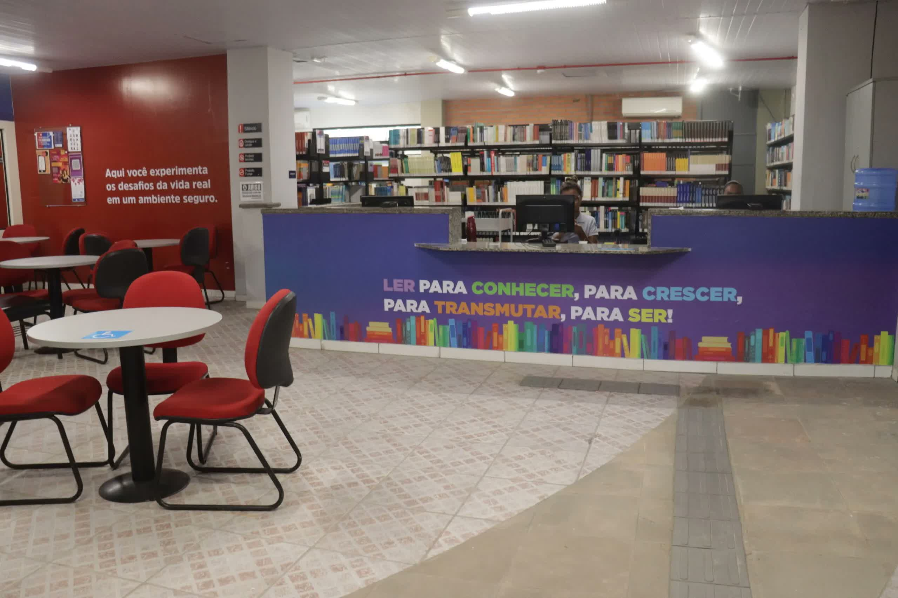
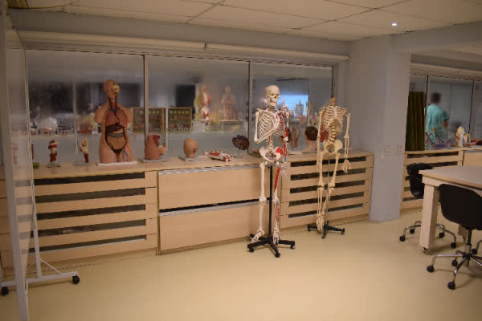

Faculdade de Medicina UNIFACS
Curso com nota máxima no MEC, referência de formação médica em Salvador/BA, campus na capital, com aulas práticas desde o primeiro período e atuação relevante na rede de saúde da cidade.
Escolha sua forma de ingresso:
Vestibular Tradicional 27.1
- Ingresse pela nossa prova clássica com conteúdos do ensino médio.
Transferência Externa 27.1
- Venha de outra instituição de forma simples.
Portador de Diploma 27.1
- Ingresse em Medicina via análise curricular da sua primeira graduação.
Por que escolher o curso de Medicina da UNIFACS:
Com uma trajetória acadêmica consolidada em Salvador, a Medicina da UNIFACS está inserida em um dos principais polos de saúde do Nordeste, oferecendo uma formação conectada á complexidade assistencial da capital baiana.
O curso promove prática desde os primeiros períodos, permitindo ao estudante desenvolver competências clínicas e atuar em contextos de alta demanda.
A integração com a rede de saúde urbana amplia a vivência do aluno nos diferentes níveis de atenção á saúde.
Como parte do ecossistema Inspirali, a UNIFACS oferece uma formação orientada pela humanização, ciência, tecnologia e compromisso social, preparando médicos completos, relevantes e conectados ás necessidades reais da sociedade.
Confira nossos diferenciais:
Há mais de 50 anos transformando vidas por meio da educação, veja alguns números:
-
Centro Integrado de Saúde próprio
Vivência prática com pacientes e casos reais no CIS da instituição, com atuação em mais de 10 especialidades, ampliando o contato com a comunidade desde os primeiros períodos.
-
Campos de estágio e prática de referência na região
Parcerias com instituições como o Hospital Martagáo Gesteira, OSID, Rede SESAB, além de hospitais públicos e privados da região, UPAs e unidades da rede SUS de Salvador.
-
Projetos sociais
Atuação constante na comunidade por meio de iniciativas como o Programa Academia Vai ao Cárcere e o Projeto de Dignidade Menstrual, somando mais de 10 ações sociais voltadas á população da região.
-
Resultados em programas de residência médica
Egressos aprovados em programas de residência médica em instituições públicas e privadas do Brasil, com destaque para programas da Bahia e de outros estados.
Estrutura de ponta
A UNIFACS oferece estrutura moderna e completa para os estudantes de Medicina. Nossos alunos contam com:

Laboratórios equipados
Coloque em prática diversas habilidades, como: cirurgias, morfofuncional, bioquímica, microbiologia e multidisciplinar, enfermaria, ambulatórios e consultórios simulados.
Salas de aula confortáveis
Aproveite uma infraestrutura moderna que satisfaz as necessidades de professores e alunos, incluindo salas de aula climatizadas para assegurar o conforto ideal durante as aulas.


Biblioteca com vasto acervo
O acervo é distribuído entre as quatro bibliotecas da universidade em Salvador (Tancredo Neves, Professor Barros e Lapa) e em Feira de Santana (Santa Mônica). Essas unidades colocam á disposição dos usuários um acervo com cerca de 300 mil itens.
Metodologias ativas
O curso de Medicina da UNIFACS adota metodologias ativas de ensino, que colocam o estudante no centro do processo de aprendizagem e promovem a construção do conhecimento de forma integrada, prática e significativa.
Essa abordagem estimula o desenvolvimento do raciocínio clínico, da autonomia, da tomada de decisão e da atuação em equipe, preparando o aluno para lidar com situações reais da prática médica desde os primeiros períodos.
As estratégias educacionais utilizadas são alinhadas ás Diretrizes Curriculares Nacionais de Medicina (DCN 2025) e conectam teoria, prática, ciência e realidade dos serviços de saúde, garantindo uma formação sólida, atual e socialmente comprometida.
-
Baseada em casos (CBCL)
Os estudantes discutem casos clínicos reais e simulados, levantando hipóteses diagnósticas e definindo condutas de tratamento. O processo desenvolve o raciocínio clínico, a tomada de decisão e o trabalho em equipe, aproximando o aprendizado da rotina real do profissional médico.
-
Baseada em Equipes (TBL)
O trabalho colaborativo fortalece a comunicação, a responsabilidade compartilhada e a tomada de decisão em grupo, competências essenciais para a prática médica.
-
Baseada em Projetos (PjBL)
Os estudantes desenvolvem projetos conectados a desafios reais da saúde e da sociedade, promovendo impacto social e integração com o SUS.
-
Simulação realística e paciente padronizado
Cenários clínicos simulados permitem o treinamento seguro de habilidades técnicas, comportamentais e comunicacionais, com feedback estruturado e foco na segurança do paciente.
-
Sala de aula invertida
O aluno se prepara previamente e utiliza o tempo em sala para aprofundar discussões, resolver casos e aplicar conhecimentos, com o professor como mediador do aprendizado.
Mercado de trabalho
Medicina possui um amplo cenário profissional com diversas oportunidades em diferentes especialidades. Por isso, a escolha da universidade é um passo tão importante. Na UNIFACS você terá a oportunidade de desenvolver aspectos fundamentais, como: concentração, trabalho em equipe, aprendizado contínuo e empatia.

Medicina UNIFACS
A Universidade UNIFACS está há 42 anos transformando vidas por meio da educação. Aqui você encontra uma metodologia de ensino moderna e exclusiva, uma infraestrutura de alto padrão, inovadora e tecnológica garantida pelo Ministério da Educação (MEC). Saiba mais:
Projeto Pedagógico